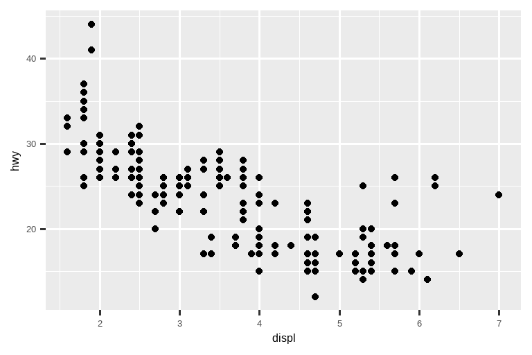

---
title: "Diamond sizes"
date: 2022-09-12
format: html
---
```{r}
#| label: setup
#| include: false
library(tidyverse)
smaller <- diamonds |>
filter(carat <= 2.5)
```
We have data about `r nrow(diamonds)` diamonds.
Only `r nrow(diamonds) - nrow(smaller)` are larger than 2.5 carats.
The distribution of the remainder is shown below:
```{r}
#| label: plot-smaller-diamonds
#| echo: false
smaller |>
ggplot(aes(x = carat)) +
geom_freqpoly(binwidth = 0.01)
```28 Quarto
Quarto 官网链接：
https://quarto.org/
28.1 Introduction
Quarto provides a unified authoring framework for data science, combining your code, its results, and your prose. Quarto documents are fully reproducible and support dozens of output formats, like PDFs, Word files, presentations, and more.
Quarto 为数据科学提供了一个统一的创作框架，它结合了你的代码、代码的运行结果以及你的文字说明。Quarto 文档是完全可复现的，并支持数十种输出格式，如 PDF、Word 文件、演示文稿等。
Quarto files are designed to be used in three ways:
Quarto 文件设计用于以下三种方式：
For communicating to decision-makers, who want to focus on the conclusions, not the code behind the analysis.
用于与决策者沟通，他们希望专注于结论，而不是分析背后的代码。For collaborating with other data scientists (including future you!), who are interested in both your conclusions, and how you reached them (i.e. the code).
用于与其他数据科学家（包括未来的你！）合作，他们对你的结论以及你如何得出这些结论（即代码）都感兴趣。As an environment in which to do data science, as a modern-day lab notebook where you can capture not only what you did, but also what you were thinking.
作为一个从事数据科学的环境，就像一个现代化的实验室笔记本，你不仅可以记录你做了什么，还可以记录你的想法。
Quarto is a command line interface tool, not an R package. This means that help is, by-and-large, not available through ?. Instead, as you work through this chapter, and use Quarto in the future, you should refer to the Quarto documentation.
Quarto 是一个命令行界面工具，而不是一个 R 包。这意味着，总的来说，你无法通过 ? 来获取帮助。相反，在学习本章和将来使用 Quarto 时，你应该参考 Quarto 官方文档。
If you’re an R Markdown user, you might be thinking “Quarto sounds a lot like R Markdown”. You’re not wrong! Quarto unifies the functionality of many packages from the R Markdown ecosystem (rmarkdown, bookdown, distill, xaringan, etc.) into a single consistent system as well as extends it with native support for multiple programming languages like Python and Julia in addition to R. In a way, Quarto reflects everything that was learned from expanding and supporting the R Markdown ecosystem over a decade.
如果你是 R Markdown 用户，你可能会想“Quarto 听起来很像 R Markdown”。你没说错！Quarto 将 R Markdown 生态系统中的许多包（rmarkdown、bookdown、distill、xaringan 等）的功能统一到一个单一、一致的系统中，并通过对 R 之外的多种编程语言（如 Python 和 Julia）的原生支持来扩展它。在某种程度上，Quarto 反映了十多年来在扩展和支持 R Markdown 生态系统过程中学到的一切。
28.1.1 Prerequisites
You need the Quarto command line interface (Quarto CLI), but you don’t need to explicitly install it or load it, as RStudio automatically does both when needed.
你需要 Quarto 命令行界面 (Quarto CLI)，但你不需要显式地安装或加载它，因为 RStudio 会在需要时自动完成这两项工作。
28.2 Quarto basics
This is a Quarto file – a plain text file that has the extension .qmd:
这是一个 Quarto 文件——一个扩展名为 .qmd 的纯文本文件：
It contains three important types of content:
它包含三种重要的内容类型：
An (optional) YAML header surrounded by
---s.
一个（可选的）由---包围的 YAML 头。Chunks of R code surrounded by
```.
由```包围的 R 代码块。Text mixed with simple text formatting like
# headingand_italics_.
混合了简单文本格式的文本，如# 标题和_斜体_。
Figure 28.1 shows a .qmd document in RStudio with notebook interface where code and output are interleaved. You can run each code chunk by clicking the Run icon (it looks like a play button at the top of the chunk), or by pressing Cmd/Ctrl + Shift + Enter. RStudio executes the code and displays the results inline with the code.
Figure 28.1 展示了 RStudio 中一个采用笔记本界面的 .qmd 文档，其中代码和输出交错显示。你可以通过点击运行图标（它看起来像代码块顶部的播放按钮），或按 Cmd/Ctrl + Shift + Enter 来运行每个代码块。RStudio 会执行代码并将结果内联显示在代码旁边。

If you don’t like seeing your plots and output in your document and would rather make use of RStudio’s Console and Plot panes, you can click on the gear icon next to “Render” and switch to “Chunk Output in Console”, as shown in Figure 28.2.
如果你不喜欢在文档中看到你的绘图和输出，而更愿意使用 RStudio 的控制台 (Console) 和绘图 (Plot) 窗格，你可以点击“Render”旁边的齿轮图标，并切换到“Chunk Output in Console”，如 Figure 28.2 所示。

To produce a complete report containing all text, code, and results, click “Render” or press Cmd/Ctrl + Shift + K. You can also do this programmatically with quarto::quarto_render("diamond-sizes.qmd"). This will display the report in the viewer pane as shown in Figure 28.3 and create an HTML file.
要生成一个包含所有文本、代码和结果的完整报告，请点击“Render”或按 Cmd/Ctrl + Shift + K。你也可以通过编程方式使用 quarto::quarto_render("diamond-sizes.qmd") 来实现。这将在查看器窗格中显示报告，如 Figure 28.3 所示，并创建一个 HTML 文件。

When you render the document, Quarto sends the .qmd file to knitr, https://yihui.org/knitr/, which executes all of the code chunks and creates a new markdown (.md) document which includes the code and its output. The markdown file generated by knitr is then processed by pandoc, https://pandoc.org, which is responsible for creating the finished file. This process is shown in Figure 28.4. The advantage of this two step workflow is that you can create a very wide range of output formats, as you’ll learn about in Chapter 29.
当你渲染文档时，Quarto 会将 .qmd 文件发送给 knitr (https://yihui.org/knitr/)，它会执行所有代码块并创建一个新的 Markdown (.md) 文档，其中包含代码及其输出。然后，由 knitr 生成的 Markdown 文件会被 pandoc (https://pandoc.org) 处理，pandoc 负责创建最终文件。这个过程如 Figure 28.4 所示。这种两步工作流的优点是你可以创建非常广泛的输出格式，你将在 Chapter 29 中学到相关内容。

To get started with your own .qmd file, select File > New File > Quarto Document… in the menu bar. RStudio will launch a wizard that you can use to pre-populate your file with useful content that reminds you how the key features of Quarto work.
要开始创建你自己的 .qmd 文件，请在菜单栏中选择 File > New File > Quarto Document…。RStudio 将启动一个向导，你可以用它来预填充文件，其中包含有用的内容，提醒你 Quarto 的关键功能是如何工作的。
The following sections dive into the three components of a Quarto document in more details: the markdown text, the code chunks, and the YAML header.
以下各节将更详细地探讨 Quarto 文档的三个组成部分：Markdown 文本、代码块和 YAML 头。
28.2.1 Exercises
Create a new Quarto document using File > New File > Quarto Document. Read the instructions. Practice running the chunks individually. Then render the document by clicking the appropriate button and then by using the appropriate keyboard short cut. Verify that you can modify the code, re-run it, and see modified output.
Create one new Quarto document for each of the three built-in formats: HTML, PDF and Word. Render each of the three documents. How do the outputs differ? How do the inputs differ? (You may need to install LaTeX in order to build the PDF output — RStudio will prompt you if this is necessary.)
28.3 Visual editor
The Visual editor in RStudio provides a WYSIWYM interface for authoring Quarto documents. Under the hood, prose in Quarto documents (.qmd files) is written in Markdown, a lightweight set of conventions for formatting plain text files. In fact, Quarto uses Pandoc markdown (a slightly extended version of Markdown that Quarto understands), including tables, citations, cross-references, footnotes, divs/spans, definition lists, attributes, raw HTML/TeX, and more as well as support for executing code cells and viewing their output inline. While Markdown is designed to be easy to read and write, as you will see in Section 28.4, it still requires learning new syntax. Therefore, if you’re new to computational documents like .qmd files but have experience using tools like Google Docs or MS Word, the easiest way to get started with Quarto in RStudio is the visual editor.
RStudio 中的可视化编辑器为创作 Quarto 文档提供了一个 WYSIWYM (所见即所意) 界面。实际上，Quarto 文档（.qmd 文件）中的文字是使用 Markdown 编写的，这是一种用于格式化纯文本文件的轻量级约定。事实上，Quarto 使用的是 Pandoc markdown（Quarto 能理解的 Markdown 的一个略微扩展的版本），它包括表格、引文、交叉引用、脚注、divs/spans、定义列表、属性、原始 HTML/TeX 等等，并且支持执行代码单元格并内联查看其输出。虽然 Markdown 被设计得易于读写，正如你将在 Section 28.4 中看到的，它仍然需要学习新的语法。因此，如果你是初次接触像 .qmd 文件这样的计算文档，但有使用 Google Docs 或 MS Word 等工具的经验，那么在 RStudio 中开始使用 Quarto 的最简单方法就是可视化编辑器。
In the visual editor you can either use the buttons on the menu bar to insert images, tables, cross-references, etc. or you can use the catch-all <kbd>⌘</kbd> + <kbd>/</kbd> or <kbd>Ctrl</kbd> + <kbd>/</kbd> shortcut to insert just about anything. If you are at the beginning of a line (as shown in Figure 28.5), you can also enter just <kbd>/</kbd> to invoke the shortcut.
在可视化编辑器中，你可以使用菜单栏上的按钮来插入图像、表格、交叉引用等，也可以使用万能快捷键 <kbd>⌘</kbd> + <kbd>/</kbd> 或 <kbd>Ctrl</kbd> + <kbd>/</kbd> 来插入几乎任何东西。如果你位于一行的开头（如 Figure 28.5 所示），你也可以只输入 <kbd>/</kbd> 来调用该快捷方式。
![A Quarto document displaying various features of the visual editor such as text formatting (italic, bold, underline, small caps, code, superscript, and subscript), first through third level headings, bulleted and numbered lists, links, linked phrases, and images (along with a pop-up window for customizing image size, adding a caption and alt text, etc.), tables with a header row, and the insert anything tool with options to insert an R code chunk, a Python code chunk, a div, a bullet list, a numbered list, or a first level heading (the top few choices in the tool).](quarto/quarto-visual-editor.png)
Inserting images and customizing how they are displayed is also facilitated with the visual editor. You can either paste an image from your clipboard directly into the visual editor (and RStudio will place a copy of that image in the project directory and link to it) or you can use the visual editor’s Insert > Figure / Image menu to browse to the image you want to insert or paste it’s URL. In addition, using the same menu you can resize the image as well as add a caption, alternative text, and a link.
可视化编辑器也方便了插入图像和自定义其显示方式。你可以直接将剪贴板中的图像粘贴到可视化编辑器中（RStudio 会将该图像的副本放置在项目目录中并链接到它），也可以使用可视化编辑器的 Insert > Figure / Image 菜单来浏览要插入的图像或粘贴其 URL。此外，使用同一菜单，你还可以调整图像大小，以及添加标题、替代文本和链接。
The visual editor has many more features that we haven’t enumerated here that you might find useful as you gain experience authoring with it.
可视化编辑器还有许多我们在此未列举的功能，随着你创作经验的增加，你可能会发现它们很有用。
Most importantly, while the visual editor displays your content with formatting, under the hood, it saves your content in plain Markdown and you can switch back and forth between the visual and source editors to view and edit your content using either tool.
最重要的是，虽然可视化编辑器会带格式地显示你的内容，但实际上它以纯 Markdown 格式保存你的内容，你可以在可视化编辑器和源代码编辑器之间来回切换，使用任一工具查看和编辑你的内容。
28.3.1 Exercises
- Re-create the document in Figure 28.5 using the visual editor.
- Using the visual editor, insert a code chunk using the Insert menu and then the insert anything tool.
- Using the visual editor, figure out how to:
- Add a footnote.
- Add a horizontal rule.
- Add a block quote.
- In the visual editor, go to Insert > Citation and insert a citation to the paper titled Welcome to the Tidyverse using its DOI (digital object identifier), which is 10.21105/joss.01686. Render the document and observe how the reference shows up in the document. What change do you observe in the YAML of your document?
28.4 Source editor
You can also edit Quarto documents using the Source editor in RStudio, without the assist of the Visual editor. While the Visual editor will feel familiar to those with experience writing in tools like Google docs, the Source editor will feel familiar to those with experience writing R scripts or R Markdown documents. The Source editor can also be useful for debugging any Quarto syntax errors since it’s often easier to catch these in plain text.
你也可以在 RStudio 中使用源代码编辑器来编辑 Quarto 文档，而无需可视化编辑器的辅助。对于有使用 Google Docs 等工具写作经验的人来说，可视化编辑器会感觉很熟悉；而对于有编写 R 脚本或 R Markdown 文档经验的人来说，源代码编辑器会感觉很熟悉。源代码编辑器对于调试任何 Quarto 语法错误也很有用，因为在纯文本中通常更容易发现这些错误。
The guide below shows how to use Pandoc’s Markdown for authoring Quarto documents in the source editor.
下面的指南展示了如何在源代码编辑器中使用 Pandoc’s Markdown 来创作 Quarto 文档。
## Text formatting
*italic* **bold** ~~strikeout~~ `code`
superscript^2^ subscript~2~
[underline]{.underline} [small caps]{.smallcaps}
## Headings
# 1st Level Header
## 2nd Level Header
### 3rd Level Header
## Lists
- Bulleted list item 1
- Item 2
- Item 2a
- Item 2b
1. Numbered list item 1
2. Item 2.
The numbers are incremented automatically in the output.
## Links and images
<http://example.com>
[linked phrase](http://example.com)
{fig-alt="Quarto logo and the word quarto spelled in small case letters"}
## Tables
| First Header | Second Header |
|--------------|---------------|
| Content Cell | Content Cell |
| Content Cell | Content Cell |The best way to learn these is simply to try them out. It will take a few days, but soon they will become second nature, and you won’t need to think about them. If you forget, you can get to a handy reference sheet with Help > Markdown Quick Reference.
学习这些的最好方法就是亲自尝试。这可能需要几天时间，但很快它们就会成为你的第二天性，你将不再需要刻意去想它们。如果你忘记了，可以通过 Help > Markdown Quick Reference 打开一个方便的参考表。
28.4.1 Exercises
Practice what you’ve learned by creating a brief CV. The title should be your name, and you should include headings for (at least) education or employment. Each of the sections should include a bulleted list of jobs/degrees. Highlight the year in bold.
-
Using the source editor and the Markdown quick reference, figure out how to:
- Add a footnote.
- Add a horizontal rule.
- Add a block quote.
Copy and paste the contents of
diamond-sizes.qmdfrom https://github.com/hadley/r4ds/tree/main/quarto in to a local R Quarto document. Check that you can run it, then add text after the frequency polygon that describes its most striking features.Create a document in a Google doc or MS Word (or locate a document you have created previously) with some content in it such as headings, hyperlinks, formatted text, etc. Copy the contents of this document and paste it into a Quarto document in the visual editor. Then, switch over to the source editor and inspect the source code.
28.5 Code chunks
To run code inside a Quarto document, you need to insert a chunk. There are three ways to do so:
要在 Quarto 文档中运行代码，你需要插入一个代码块。有三种方法可以做到这一点：
The keyboard shortcut Cmd + Option + I / Ctrl + Alt + I.
键盘快捷键 Cmd + Option + I / Ctrl + Alt + I。The “Insert” button icon in the editor toolbar.
编辑器工具栏中的“Insert”按钮图标。By manually typing the chunk delimiters
```{r}and```.
手动输入代码块的分隔符```{r}和```。
We’d recommend you learn the keyboard shortcut. It will save you a lot of time in the long run!
我们建议你学习这个键盘快捷键。从长远来看，它会为你节省大量时间！
You can continue to run the code using the keyboard shortcut that by now (we hope!) you know and love: Cmd/Ctrl + Enter. However, chunks get a new keyboard shortcut: Cmd/Ctrl + Shift + Enter, which runs all the code in the chunk. Think of a chunk like a function. A chunk should be relatively self-contained, and focused around a single task.
你可以继续使用你现在（我们希望！）已经熟知并喜爱的键盘快捷键来运行代码：Cmd/Ctrl + Enter。然而，代码块有了一个新的键盘快捷键：Cmd/Ctrl + Shift + Enter，它会运行代码块中的所有代码。可以把代码块想象成一个函数。一个代码块应该是相对独立的，并专注于一个单一的任务。
The following sections describe the chunk header which consists of ```{r}, followed by an optional chunk label and various other chunk options, each on their own line, marked by #|.
以下各节描述了代码块的头部，它由 ```{r} 组成，后面跟着一个可选的代码块标签和各种其他的代码块选项，每个选项都独占一行，并以 #| 标记。
28.5.1 Chunk label
Chunks can be given an optional label, e.g.
代码块可以被赋予一个可选的标签，例如：
```{r}
#| label: simple-addition
1 + 1
```#> [1] 2This has three advantages:
这有三个优点：
-
You can more easily navigate to specific chunks using the drop-down code navigator in the bottom-left of the script editor:
你可以使用脚本编辑器左下角的下拉代码导航器更轻松地导航到特定的代码块：{r} #| echo: false #| out-width: "30%" #| fig-alt: | #| Snippet of RStudio IDE showing only the drop-down code navigator #| which shows three chunks. Chunk 1 is setup. Chunk 2 is cars and #| it is in a section called Quarto. Chunk 3 is pressure and it is in #| a section called Including plots. knitr::include_graphics("screenshots/quarto-chunk-nav.png") Graphics produced by the chunks will have useful names that make them easier to use elsewhere. More on that in Section 28.6.
代码块生成的图形将具有有用的名称，使它们更易于在其他地方使用。更多相关内容请参见 Section 28.6。You can set up networks of cached chunks to avoid re-performing expensive computations on every run. More on that in Section 28.8.
你可以设置缓存代码块网络，以避免在每次运行时重新执行耗时的计算。更多相关内容请参见 Section 28.8。
Your chunk labels should be short but evocative and should not contain spaces. We recommend using dashes (-) to separate words (instead of underscores, _) and avoiding other special characters in chunk labels.
你的代码块标签应该简短但具有描述性，并且不应包含空格。我们建议使用破折号 (-) 来分隔单词（而不是下划线 _），并避免在代码块标签中使用其他特殊字符。
You are generally free to label your chunk however you like, but there is one chunk name that imbues special behavior: setup. When you’re in a notebook mode, the chunk named setup will be run automatically once, before any other code is run.
你通常可以随意命名你的代码块，但有一个代码块名称具有特殊的行为：setup。当你在笔记本模式下时，名为 setup 的代码块会在运行任何其他代码之前自动运行一次。
Additionally, chunk labels cannot be duplicated. Each chunk label must be unique.
此外，代码块标签不能重复。每个代码块标签必须是唯一的。
28.5.2 Chunk options
Chunk output can be customized with options, fields supplied to chunk header. Knitr provides almost 60 options that you can use to customize your code chunks. Here we’ll cover the most important chunk options that you’ll use frequently. You can see the full list at https://yihui.org/knitr/options.
代码块的输出可以通过选项（提供给代码块头部的字段）进行自定义。Knitr 提供了近 60 个选项，你可以用来自定义你的代码块。在这里，我们将介绍你将频繁使用的最重要的代码块选项。你可以在 https://yihui.org/knitr/options 查看完整列表。
The most important set of options controls if your code block is executed and what results are inserted in the finished report:
最重要的一组选项控制着你的代码块是否被执行，以及哪些结果被插入到最终的报告中：
eval: falseprevents code from being evaluated.eval: false可防止代码被执行。
(And obviously if the code is not run, no results will be generated).
（很明显，如果代码没有运行，就不会生成任何结果）。
This is useful for displaying example code, or for disabling a large block of code without commenting each line.
这对于显示示例代码，或在不逐行注释的情况下禁用大段代码非常有用。include: falseruns the code, but doesn’t show the code or results in the final document.include: false会运行代码，但不会在最终文档中显示代码或结果。
Use this for setup code that you don’t want cluttering your report.
可将此选项用于你不想让报告显得杂乱的设置代码。echo: falseprevents code, but not the results, from appearing in the finished file.echo: false可以防止代码（但不会阻止结果）出现在最终文件中。
Use this when writing reports aimed at people who don’t want to see the underlying R code.
当编写面向不想看到底层 R 代码的读者的报告时，请使用此选项。message: falseorwarning: falseprevents messages or warnings from appearing in the finished file.message: false或warning: false可以防止消息或警告出现在最终文件中。results: hidehides printed output;fig-show: hidehides plots.results: hide隐藏打印输出；fig-show: hide隐藏绘图。error: truecauses the render to continue even if code returns an error.error: true会使渲染在代码返回错误时也能继续进行。
This is rarely something you’ll want to include in the final version of your report, but can be very useful if you need to debug exactly what is going on inside your.qmd.
你很少会希望在报告的最终版本中包含此选项，但当需要准确调试.qmd文件内部情况时，它会非常有用。
It’s also useful if you’re teaching R and want to deliberately include an error.
如果你在教授 R 语言并希望故意引入一个错误，这个选项也很有用。
The default,error: falsecauses rendering to fail if there is a single error in the document.
默认值error: false会在文档中出现单个错误时导致渲染失败。
Each of these chunk options get added to the header of the chunk, following #|, e.g., in the following chunk the result is not printed since eval is set to false.
这些代码块选项中的每一个都会被添加到代码块的头部，跟在 #| 后面，例如，在下面的代码块中，结果不会被打印出来，因为 eval 被设置为了 false。
```{r}
#| label: simple-multiplication
#| eval: false
2 * 2
```The following table summarizes which types of output each option suppresses:
下表总结了每个选项抑制的输出类型：
| Option | Run code | Show code | Output | Plots | Messages | Warnings |
|---|---|---|---|---|---|---|
eval: false |
X | X | X | X | X | |
include: false |
X | X | X | X | X | |
echo: false |
X | |||||
results: hide |
X | |||||
fig-show: hide |
X | |||||
message: false |
X | |||||
warning: false |
X |
28.5.3 Global options
As you work more with knitr, you will discover that some of the default chunk options don’t fit your needs and you want to change them.
随着你更多地使用 knitr，你会发现一些默认的代码块选项不符合你的需求，你会想要更改它们。
You can do this by adding the preferred options in the document YAML, under execute. For example, if you are preparing a report for an audience who does not need to see your code but only your results and narrative, you might set echo: false at the document level. That will hide the code by default, so only showing the chunks you deliberately choose to show (with echo: true). You might consider setting message: false and warning: false, but that would make it harder to debug problems because you wouldn’t see any messages in the final document.
你可以在文档的 YAML 中，execute 项下添加偏好的选项来做到这一点。例如，如果你正在为一群不需要看你的代码，只关心结果和叙述的读者准备报告，你可以在文档级别设置 echo: false。这样会默认隐藏代码，只显示你特意选择显示的代码块（通过 echo: true）。你可能会考虑设置 message: false 和 warning: false，但这会使调试问题变得更加困难，因为你在最终的文档中看不到任何消息。
title: "My report"
execute:
echo: falseSince Quarto is designed to be multi-lingual (works with R as well as other languages like Python, Julia, etc.), all of the knitr options are not available at the document execution level since some of them only work with knitr and not other engines Quarto uses for running code in other languages (e.g., Jupyter). You can, however, still set these as global options for your document under the knitr field, under opts_chunk. For example, when writing books and tutorials we set:
由于 Quarto 被设计为多语言的（既支持 R，也支持 Python、Julia 等其他语言），因此并非所有的 knitr 选项都在文档执行级别可用，因为其中一些选项只适用于 knitr，而不适用于 Quarto 用于运行其他语言代码（例如，Jupyter）的其他引擎。不过，你仍然可以在 knitr 字段下的 opts_chunk 中将它们设置为文档的全局选项。例如，在编写书籍和教程时，我们会这样设置：
title: "Tutorial"
knitr:
opts_chunk:
comment: "#>"
collapse: trueThis uses our preferred comment formatting and ensures that the code and output are kept closely entwined.
这会使用我们偏好的注释格式，并确保代码和输出紧密地结合在一起。
28.5.4 Inline code
There is one other way to embed R code into a Quarto document: directly into the text, with: `r `. This can be very useful if you mention properties of your data in the text. For example, the example document used at the start of the chapter had:
还有一种将 R 代码嵌入 Quarto 文档的方式：直接嵌入文本中，使用：`r `。如果你在文本中提到数据的属性，这会非常有用。例如，本章开头使用的示例文档中有：
We have data about
`r nrow(diamonds)`diamonds. Only`r nrow(diamonds) - nrow(smaller)`are larger than 2.5 carats. The distribution of the remainder is shown below:
When the report is rendered, the results of these computations are inserted into the text:
当报告被渲染时，这些计算的结果会被插入到文本中：
We have data about 53940 diamonds. Only 126 are larger than 2.5 carats. The distribution of the remainder is shown below:
When inserting numbers into text, format() is your friend. It allows you to set the number of digits so you don’t print to a ridiculous degree of precision, and a big.mark to make numbers easier to read. You might combine these into a helper function:
当在文本中插入数字时，format() 是你的好帮手。它允许你设置 digits 的数量，这样你就不会打印出精度高到离谱的数字，并且可以使用 big.mark 使数字更易于阅读。你可以将这些组合成一个辅助函数：
comma <- function(x) format(x, digits = 2, big.mark = ",")
comma(3452345)
#> [1] "3,452,345"
comma(.12358124331)
#> [1] "0.12"28.5.5 Exercises
Add a section that explores how diamond sizes vary by cut, color, and clarity. Assume you’re writing a report for someone who doesn’t know R, and instead of setting
echo: falseon each chunk, set a global option.Download
diamond-sizes.qmdfrom https://github.com/hadley/r4ds/tree/main/quarto. Add a section that describes the largest 20 diamonds, including a table that displays their most important attributes.Modify
diamonds-sizes.qmdto uselabel_comma()to produce nicely formatted output. Also include the percentage of diamonds that are larger than 2.5 carats.
28.6 Figures
The figures in a Quarto document can be embedded (e.g., a PNG or JPEG file) or generated as a result of a code chunk.
Quarto 文档中的图形可以是嵌入式的（例如，PNG 或 JPEG 文件），也可以是由代码块生成的结果。
To embed an image from an external file, you can use the Insert menu in the Visual Editor in RStudio and select Figure / Image. This will pop open a menu where you can browse to the image you want to insert as well as add alternative text or caption to it and adjust its size. In the visual editor you can also simply paste an image from your clipboard into your document and RStudio will place a copy of that image in your project folder.
要从外部文件嵌入图像，你可以在 RStudio 的可视化编辑器中使用插入菜单，并选择图形 / 图像。这将弹出一个菜单，你可以在其中浏览要插入的图像，并为其添加替代文本或标题，以及调整其大小。在可视化编辑器中，你也可以简单地将剪贴板中的图像粘贴到文档中，RStudio 会将该图像的副本放置在你的项目文件夹中。
If you include a code chunk that generates a figure (e.g., includes a ggplot() call), the resulting figure will be automatically included in your Quarto document.
如果你包含一个生成图形的代码块（例如，包含一个 ggplot() 调用），生成的图形将自动包含在你的 Quarto 文档中。
28.6.1 Figure sizing
The biggest challenge of graphics in Quarto is getting your figures the right size and shape. There are five main options that control figure sizing: fig-width, fig-height, fig-asp, out-width and out-height. Image sizing is challenging because there are two sizes (the size of the figure created by R and the size at which it is inserted in the output document), and multiple ways of specifying the size (i.e. height, width, and aspect ratio: pick two of three).
在 Quarto 中，图形面临的最大挑战是获得合适的尺寸和形状。有五个主要选项可以控制图形大小：fig-width、fig-height、fig-asp、out-width 和 out-height。图像尺寸调整之所以具有挑战性，是因为存在两种尺寸（R 创建的图形尺寸和插入到输出文档中的尺寸），并且有多种指定尺寸的方式（即高度、宽度和纵横比：三者选其二）。
We recommend three of the five options:
我们推荐五个选项中的三个：
Plots tend to be more aesthetically pleasing if they have consistent width.
To enforce this, setfig-width: 6(6”) andfig-asp: 0.618(the golden ratio) in the defaults.
Then in individual chunks, only adjustfig-asp.
如果图的宽度一致，它们往往在美学上更令人愉悦。
为了实现这一点，可以在默认设置中设定fig-width: 6（6英寸）和fig-asp: 0.618（黄金比例）。
然后在单个代码块中，只调整fig-asp。Control the output size with
out-widthand set it to a percentage of the body width of the output document.
We suggest toout-width: "70%"andfig-align: center.
That gives plots room to breathe, without taking up too much space.
使用out-width控制输出尺寸，并将其设置为输出文档正文宽度的百分比。
我们建议设置为out-width: "70%"和fig-align: center。
这给图表留出了呼吸的空间，而不会占用太多空间。To put multiple plots in a single row, set the
layout-ncolto 2 for two plots, 3 for three plots, etc.
This effectively setsout-widthto “50%” for each of your plots iflayout-ncolis 2, “33%” iflayout-ncolis 3, etc.
Depending on what you’re trying to illustrate (e.g., show data or show plot variations), you might also tweakfig-width, as discussed below.
要将多个图放在一行中，可以将layout-ncol设置为 2（表示两个图）、3（表示三个图）等。
如果layout-ncol是 2，这实际上会将每个图的out-width设置为 “50%”；如果layout-ncol是 3，则设置为 “33%”，以此类推。
根据你试图说明的内容（例如，显示数据或显示图的变化），你可能还需要调整fig-width，如下文所述。
If you find that you’re having to squint to read the text in your plot, you need to tweak fig-width. If fig-width is larger than the size the figure is rendered in the final doc, the text will be too small; if fig-width is smaller, the text will be too big. You’ll often need to do a little experimentation to figure out the right ratio between the fig-width and the eventual width in your document. To illustrate the principle, the following three plots have fig-width of 4, 6, and 8 respectively:
如果你发现自己需要眯着眼睛才能看清图中的文字，那么你需要调整 fig-width。如果 fig-width 大于最终文档中渲染的图形尺寸，文字会太小；如果 fig-width 更小，文字会太大。你通常需要做一些实验来找出 fig-width 和文档中最终宽度之间的正确比例。为了说明这个原理，下面三个图的 fig-width 分别为 4、6 和 8：



If you want to make sure the font size is consistent across all your figures, whenever you set out-width, you’ll also need to adjust fig-width to maintain the same ratio with your default out-width. For example, if your default fig-width is 6 and out-width is “70%”, when you set out-width: "50%" you’ll need to set fig-width to 4.3 (6 * 0.5 / 0.7).
如果你想确保所有图形的字体大小保持一致，那么每当你设置 out-width 时，你也需要调整 fig-width 以保持与默认 out-width 相同的比例。例如，如果你的默认 fig-width 是 6，out-width 是 “70%”，那么当你将 out-width 设置为 “50%” 时，你需要将 fig-width 设置为 4.3 (6 * 0.5 / 0.7)。
Figure sizing and scaling is an art and science and getting things right can require an iterative trial-and-error approach. You can learn more about figure sizing in the taking control of plot scaling blog post.
图形的尺寸和缩放是一门艺术和科学，要做到恰到好处可能需要反复试验。你可以在 《掌控绘图缩放》这篇博文 中了解更多关于图形尺寸调整的知识。
28.6.2 Other important options
When mingling code and text, like in this book, you can set fig-show: hold so that plots are shown after the code. This has the pleasant side effect of forcing you to break up large blocks of code with their explanations.
当像本书这样将代码和文本混合在一起时，你可以设置 fig-show: hold，这样图表就会在代码之后显示。这样做有一个令人愉快的好处，就是迫使你用解释来打断大段的代码。
To add a caption to the plot, use fig-cap. In Quarto this will change the figure from inline to “floating”.
要为图表添加标题，请使用 fig-cap。在 Quarto 中，这会将图形从内联（inline）更改为“浮动”（floating）。
If you’re producing PDF output, the default graphics type is PDF. This is a good default because PDFs are high quality vector graphics. However, they can produce very large and slow plots if you are displaying thousands of points. In that case, set fig-format: "png" to force the use of PNGs. They are slightly lower quality, but will be much more compact.
如果你要生成 PDF 输出，默认的图形类型是 PDF。这是一个很好的默认设置，因为 PDF 是高质量的矢量图形。但是，如果你要显示数千个点，它们可能会生成非常大且加载缓慢的图。在这种情况下，可以设置 fig-format: "png" 来强制使用 PNG。它们的质量稍低，但会更加紧凑。
It’s a good idea to name code chunks that produce figures, even if you don’t routinely label other chunks. The chunk label is used to generate the file name of the graphic on disk, so naming your chunks makes it much easier to pick out plots and reuse in other circumstances (e.g., if you want to quickly drop a single plot into an email).
为生成图形的代码块命名是一个好主意，即使你并不常规地为其他代码块添加标签。代码块标签用于生成磁盘上图形文件的名称，因此为代码块命名可以让你更容易地挑选出图表并在其他情况下重用（例如，如果你想快速将单个图表放入电子邮件中）。
28.6.3 Exercises
- Open
diamond-sizes.qmdin the visual editor, find an image of a diamond, copy it, and paste it into the document. Double click on the image and add a caption. Resize the image and render your document. Observe how the image is saved in your current working directory. - Edit the label of the code chunk in
diamond-sizes.qmdthat generates a plot to start with the prefixfig-and add a caption to the figure with the chunk optionfig-cap. Then, edit the text above the code chunk to add a cross-reference to the figure with Insert > Cross Reference. - Change the size of the figure with the following chunk options, one at a time, render your document, and describe how the figure changes.
fig-width: 10fig-height: 3out-width: "100%"out-width: "20%"
28.7 Tables
Similar to figures, you can include two types of tables in a Quarto document. They can be markdown tables that you create directly in your Quarto document (using the Insert Table menu) or they can be tables generated as a result of a code chunk. In this section we will focus on the latter, tables generated via computation.
与图形类似，你可以在 Quarto 文档中包含两种类型的表格。它们可以是你直接在 Quarto 文档中创建的 markdown 表格（使用“插入表格”菜单），也可以是由代码块生成的结果。在本节中，我们将重点关注后者，即通过计算生成的表格。
By default, Quarto prints data frames and matrices as you’d see them in the console:
默认情况下，Quarto 会像你在控制台中看到的那样打印数据框和矩阵：
mtcars[1:5, ]
#> mpg cyl disp hp drat wt qsec vs am gear carb
#> Mazda RX4 21.0 6 160 110 3.90 2.620 16.46 0 1 4 4
#> Mazda RX4 Wag 21.0 6 160 110 3.90 2.875 17.02 0 1 4 4
#> Datsun 710 22.8 4 108 93 3.85 2.320 18.61 1 1 4 1
#> Hornet 4 Drive 21.4 6 258 110 3.08 3.215 19.44 1 0 3 1
#> Hornet Sportabout 18.7 8 360 175 3.15 3.440 17.02 0 0 3 2If you prefer that data be displayed with additional formatting you can use the knitr::kable() function. The code below generates Table 28.1.
如果你希望数据以附加格式显示，可以使用 knitr::kable() 函数。下面的代码生成了 Table 28.1。
knitr::kable(mtcars[1:5, ], )| mpg | cyl | disp | hp | drat | wt | qsec | vs | am | gear | carb | |
|---|---|---|---|---|---|---|---|---|---|---|---|
| Mazda RX4 | 21.0 | 6 | 160 | 110 | 3.90 | 2.620 | 16.46 | 0 | 1 | 4 | 4 |
| Mazda RX4 Wag | 21.0 | 6 | 160 | 110 | 3.90 | 2.875 | 17.02 | 0 | 1 | 4 | 4 |
| Datsun 710 | 22.8 | 4 | 108 | 93 | 3.85 | 2.320 | 18.61 | 1 | 1 | 4 | 1 |
| Hornet 4 Drive | 21.4 | 6 | 258 | 110 | 3.08 | 3.215 | 19.44 | 1 | 0 | 3 | 1 |
| Hornet Sportabout | 18.7 | 8 | 360 | 175 | 3.15 | 3.440 | 17.02 | 0 | 0 | 3 | 2 |
Read the documentation for ?knitr::kable to see the other ways in which you can customize the table. For even deeper customization, consider the gt, huxtable, reactable, kableExtra, xtable, stargazer, pander, tables, and ascii packages. Each provides a set of tools for returning formatted tables from R code.
阅读 ?knitr::kable 的文档，了解自定义表格的其他方法。如果需要更深度的定制，可以考虑使用 gt、huxtable、reactable、kableExtra、xtable、stargazer、pander、tables 和 ascii 等包。每个包都提供了一套用于从 R 代码返回格式化表格的工具。
28.7.1 Exercises
- Open
diamond-sizes.qmdin the visual editor, insert a code chunk, and add a table withknitr::kable()that shows the first 5 rows of thediamondsdata frame. - Display the same table with
gt::gt()instead. - Add a chunk label that starts with the prefix
tbl-and add a caption to the table with the chunk optiontbl-cap. Then, edit the text above the code chunk to add a cross-reference to the table with Insert > Cross Reference.
28.8 Caching
Normally, each render of a document starts from a completely clean slate.
通常，每次渲染文档都是从一个完全干净的状态开始的。
This is great for reproducibility, because it ensures that you’ve captured every important computation in code.
这对于可复现性来说非常好，因为它确保了你已经在代码中捕获了每一个重要的计算。
However, it can be painful if you have some computations that take a long time.
然而，如果你有一些需要很长时间才能完成的计算，这可能会很痛苦。
The solution is cache: true.
解决方案是 cache: true。
You can enable the Knitr cache at the document level for caching the results of all computations in a document using standard YAML options:
你可以使用标准的 YAML 选项，在文档级别启用 Knitr 缓存，来缓存文档中所有计算的结果：
---
title: "My Document"
execute:
cache: true
---You can also enable caching at the chunk level for caching the results of computation in a specific chunk:
你也可以在代码块级别启用缓存，来缓存特定代码块中的计算结果：
```{r}
#| cache: true
# code for lengthy computation...
```When set, this will save the output of the chunk to a specially named file on disk.
设置后，这将把代码块的输出保存到磁盘上的一个特殊命名的文件中。
On subsequent runs, knitr will check to see if the code has changed, and if it hasn’t, it will reuse the cached results.
在后续运行中，knitr 将检查代码是否已更改，如果未更改，它将重用缓存的结果。
The caching system must be used with care, because by default it is based on the code only, not its dependencies.
缓存系统必须谨慎使用，因为默认情况下它只基于代码本身，而不基于其依赖项。
For example, here the processed_data chunk depends on the raw-data chunk:
例如，这里的 processed_data 代码块依赖于 raw-data 代码块：
``` {{r}}
#| label: raw-data
#| cache: true
rawdata <- readr::read_csv("a_very_large_file.csv")
`````` {{r}}
#| label: processed_data
#| cache: true
processed_data <- rawdata |>
filter(!is.na(import_var)) |>
mutate(new_variable = complicated_transformation(x, y, z))
```Caching the processed_data chunk means that it will get re-run if the dplyr pipeline is changed, but it won’t get rerun if the read_csv() call changes.
缓存 processed_data 代码块意味着如果 dplyr 管道发生更改，它将重新运行，但如果 read_csv() 调用发生更改，它将不会重新运行。
You can avoid that problem with the dependson chunk option:
你可以使用 dependson 代码块选项来避免这个问题：
``` {{r}}
#| label: processed-data
#| cache: true
#| dependson: "raw-data"
processed_data <- rawdata |>
filter(!is.na(import_var)) |>
mutate(new_variable = complicated_transformation(x, y, z))
```dependson should contain a character vector of every chunk that the cached chunk depends on.dependson 应该包含一个字符向量，其中包含被缓存的代码块所依赖的每一个代码块。
Knitr will update the results for the cached chunk whenever it detects that one of its dependencies have changed.
每当 Knitr 检测到其某个依赖项已更改时，它将更新缓存代码块的结果。
Note that the chunks won’t update if a_very_large_file.csv changes, because knitr caching only tracks changes within the .qmd file.
请注意，如果 a_very_large_file.csv 发生更改，代码块不会更新，因为 knitr 缓存只跟踪 .qmd 文件内部的更改。
If you want to also track changes to that file you can use the cache.extra option.
如果你还想跟踪该文件的更改，可以使用 cache.extra 选项。
This is an arbitrary R expression that will invalidate the cache whenever it changes.
这是一个任意的 R 表达式，每当它发生更改时，都会使缓存失效。
A good function to use is file.mtime(): it returns when it was last modified.
一个很好用的函数是 file.mtime()：它返回文件的最后修改时间。
Then you can write:
然后你可以这样写：
``` {{r}}
#| label: raw-data
#| cache: true
#| cache.extra: !expr file.mtime("a_very_large_file.csv")
rawdata <- readr::read_csv("a_very_large_file.csv")
```We’ve followed the advice of David Robinson to name these chunks: each chunk is named after the primary object that it creates.
我们遵循了 David Robinson 的建议来命名这些代码块：每个代码块都以它创建的主要对象命名。
This makes it easier to understand the dependson specification.
这使得理解 dependson 的规范变得更加容易。
As your caching strategies get progressively more complicated, it’s a good idea to regularly clear out all your caches with knitr::clean_cache().
随着你的缓存策略变得越来越复杂，定期使用 knitr::clean_cache() 清除所有缓存是个好主意。
28.8.1 Exercises
- Set up a network of chunks where
ddepends oncandb, and bothbandcdepend ona. Have each chunk printlubridate::now(), setcache: true, then verify your understanding of caching.
28.9 Troubleshooting
Troubleshooting Quarto documents can be challenging because you are no longer in an interactive R environment, and you will need to learn some new tricks.
对 Quarto 文档进行故障排除可能具有挑战性，因为你不再处于交互式 R 环境中，需要学习一些新技巧。
Additionally, the error could be due to issues with the Quarto document itself or due to the R code in the Quarto document.
此外，错误可能是由于 Quarto 文档本身的问题，也可能是由于 Quarto 文档中的 R 代码问题。
One common error in documents with code chunks is duplicated chunk labels, which are especially pervasive if your workflow involves copying and pasting code chunks.
带有代码块的文档中一个常见的错误是重复的代码块标签，如果你的工作流程涉及复制和粘贴代码块，这个问题尤其普遍。
To address this issue, all you need to do is to change one of your duplicated labels.
要解决此问题，你只需更改其中一个重复的标签即可。
If the errors are due to the R code in the document, the first thing you should always try is to recreate the problem in an interactive session.
如果错误是由于文档中的 R 代码引起的，你首先应该尝试在交互式会话中重现问题。
Restart R, then “Run all chunks”, either from the Code menu, under Run region or with the keyboard shortcut Ctrl + Alt + R.
重启 R，然后“运行所有代码块”，可以从“代码”菜单的“运行区域”下选择，也可以使用键盘快捷键 Ctrl + Alt + R。
If you’re lucky, that will recreate the problem, and you can figure out what’s going on interactively.
如果幸运的话，这将重现问题，你就可以在交互式环境中找出问题所在。
If that doesn’t help, there must be something different between your interactive environment and the Quarto environment.
如果这没有帮助，那么你的交互式环境和 Quarto 环境之间肯定存在差异。
You’re going to need to systematically explore the options.
你将需要系统地探索各种可能性。
The most common difference is the working directory: the working directory of a Quarto is the directory in which it lives.
最常见的区别是工作目录：Quarto 的工作目录是它所在的目录。
Check the working directory is what you expect by including getwd() in a chunk.
通过在代码块中包含 getwd() 来检查工作目录是否符合你的预期。
Next, brainstorm all the things that might cause the bug.
接下来，集思广益，想出所有可能导致错误的事情。
You’ll need to systematically check that they’re the same in your R session and your Quarto session.
你需要系统地检查它们在你的 R 会话和 Quarto 会话中是否相同。
The easiest way to do that is to set error: true on the chunk causing the problem, then use print() and str() to check that settings are as you expect.
最简单的方法是在导致问题的代码块上设置 error: true，然后使用 print() 和 str() 来检查设置是否如你所料。
28.10 YAML header
You can control many other “whole document” settings by tweaking the parameters of the YAML header.
你可以通过调整 YAML 头部的参数来控制许多其他的“整个文档”设置。
You might wonder what YAML stands for: it’s “YAML Ain’t Markup Language”, which is designed for representing hierarchical data in a way that’s easy for humans to read and write.
你可能想知道 YAML 代表什么：它是 “YAML Ain’t Markup Language”（YAML 不是标记语言），旨在以一种易于人类读写的方式表示分层数据。
Quarto uses it to control many details of the output.
Quarto 使用它来控制输出的许多细节。
Here we’ll discuss three: self-contained documents, document parameters, and bibliographies.
这里我们将讨论三个：自包含文档、文档参数和参考文献。
28.10.1 Self-contained
HTML documents typically have a number of external dependencies (e.g., images, CSS style sheets, JavaScript, etc.) and, by default, Quarto places these dependencies in a _files folder in the same directory as your .qmd file.
HTML 文档通常有许多外部依赖项（例如，图像、CSS 样式表、JavaScript 等），默认情况下，Quarto 将这些依赖项放在与你的 .qmd 文件相同目录下的一个 _files 文件夹中。
If you publish the HTML file on a hosting platform (e.g., QuartoPub, https://quartopub.com/), the dependencies in this directory are published with your document and hence are available in the published report.
如果你在托管平台（例如，QuartoPub, https://quartopub.com/）上发布 HTML 文件，此目录中的依赖项将与你的文档一起发布，因此在发布的报告中可用。
However, if you want to email the report to a colleague, you might prefer to have a single, self-contained, HTML document that embeds all of its dependencies.
然而，如果你想通过电子邮件将报告发送给同事，你可能更喜欢一个单一的、自包含的、嵌入了所有依赖项的 HTML 文档。
You can do this by specifying the embed-resources option:
你可以通过指定 embed-resources 选项来做到这一点：
format:
html:
embed-resources: trueThe resulting file will be self-contained, such that it will need no external files and no internet access to be displayed properly by a browser.
生成的文件将是自包含的，因此它不需要任何外部文件，也不需要互联网连接即可被浏览器正常显示。
28.10.2 Parameters
Quarto documents can include one or more parameters whose values can be set when you render the report.
Quarto 文档可以包含一个或多个参数，其值可以在你渲染报告时设置。
Parameters are useful when you want to re-render the same report with distinct values for various key inputs.
当你希望使用不同的关键输入值重新渲染同一份报告时，参数非常有用。
For example, you might be producing sales reports per branch, exam results by student, or demographic summaries by country.
例如，你可能正在按分公司生成销售报告、按学生生成考试成绩或按国家生成人口摘要。
To declare one or more parameters, use the params field.
要声明一个或多个参数，请使用 params 字段。
This example uses a my_class parameter to determine which class of cars to display:
此示例使用 my_class 参数来确定要显示的汽车类别：
---
format: html
params:
my_class: "suv"
---
```{r}
#| label: setup
#| include: false
library(tidyverse)
class <- mpg |> filter(class == params$my_class)
```
# Fuel economy for `r params$my_class`s
```{r}
#| message: false
ggplot(class, aes(x = displ, y = hwy)) +
geom_point() +
geom_smooth(se = FALSE)
```As you can see, parameters are available within the code chunks as a read-only list named params.
如你所见，参数在代码块中以名为 params 的只读列表形式提供。
You can write atomic vectors directly into the YAML header.
你可以将原子向量直接写入 YAML 头部。
You can also run arbitrary R expressions by prefacing the parameter value with !expr.
你还可以通过在参数值前加上 !expr 来运行任意的 R 表达式。
This is a good way to specify date/time parameters.
这是指定日期/时间参数的好方法。
params:
start: !expr lubridate::ymd("2015-01-01")
snapshot: !expr lubridate::ymd_hms("2015-01-01 12:30:00")28.10.3 Bibliographies and Citations
Quarto can automatically generate citations and a bibliography in a number of styles.
Quarto 可以自动生成多种样式的引文和参考文献。
The most straightforward way of adding citations and bibliographies to a Quarto document is using the visual editor in RStudio.
向 Quarto 文档添加引文和参考文献最直接的方法是使用 RStudio 中的可视化编辑器。
To add a citation using the visual editor, go to Insert > Citation.
要使用可视化编辑器添加引文，请转到插入 > 引文 (Insert > Citation)。
Citations can be inserted from a variety of sources:
引文可以从多种来源插入：
Searches of Crossref, DataCite, or PubMed.
搜索 Crossref、DataCite 或 PubMed。Your document bibliography (a
.bibfile in the directory of your document)
你的文档参考文献（文档目录中的一个.bib文件）。
Under the hood, the visual mode uses the standard Pandoc markdown representation for citations (e.g., [@citation]).
在底层，可视化模式使用标准的 Pandoc markdown 表示法来表示引文（例如，[@citation]）。
If you add a citation using one of the first three methods, the visual editor will automatically create a bibliography.bib file for you and add the reference to it.
如果你使用前三种方法之一添加引文，可视化编辑器将自动为你创建一个 bibliography.bib 文件并将引用添加到其中。
It will also add a bibliography field to the document YAML.
它还会在文档的 YAML 中添加一个 bibliography 字段。
As you add more references, this file will get populated with their citations.
随着你添加更多引用，该文件将填充它们的引文信息。
You can also directly edit this file using many common bibliography formats including BibLaTeX, BibTeX, EndNote, Medline.
你还可以使用许多常见的参考文献格式直接编辑此文件，包括 BibLaTeX、BibTeX、EndNote、Medline。
To create a citation within your .qmd file in the source editor, use a key composed of ‘@’ + the citation identifier from the bibliography file.
要在源编辑器中在你的 .qmd 文件内创建引文，请使用由“@”+ 参考文献文件中的引文标识符组成的键。
Then place the citation in square brackets.
然后将引文放在方括号中。
Here are some examples:
这里有一些例子：
Separate multiple citations with a `;`: Blah blah [@smith04; @doe99].
You can add arbitrary comments inside the square brackets:
Blah blah [see @doe99, pp. 33-35; also @smith04, ch. 1].
Remove the square brackets to create an in-text citation: @smith04
says blah, or @smith04 [p. 33] says blah.
Add a `-` before the citation to suppress the author's name:
Smith says blah [-@smith04].When Quarto renders your file, it will build and append a bibliography to the end of your document.
当 Quarto 渲染你的文件时，它将构建一个参考文献列表并附加到你的文档末尾。
The bibliography will contain each of the cited references from your bibliography file, but it will not contain a section heading.
参考文献列表将包含你的参考文献文件中的每一个被引用的文献，但它不会包含章节标题。
As a result it is common practice to end your file with a section header for the bibliography, such as # References or # Bibliography.
因此，通常的做法是在文件末尾为参考文献添加一个章节标题，例如 # References 或 # Bibliography。
You can change the style of your citations and bibliography by referencing a CSL (citation style language) file in the csl field:
你可以通过在 csl 字段中引用一个 CSL（引文样式语言）文件来更改你的引文和参考文献的样式：
bibliography: rmarkdown.bib
csl: apa.cslAs with the bibliography field, your csl file should contain a path to the file.
与参考文献字段一样，你的 csl 文件应包含文件的路径。
Here we assume that the csl file is in the same directory as the .qmd file.
这里我们假设 csl 文件与 .qmd 文件在同一目录中。
A good place to find CSL style files for common bibliography styles is https://github.com/citation-style-language/styles.
一个寻找常见参考文献样式 CSL 样式文件的好地方是 https://github.com/citation-style-language/styles。
28.11 Workflow
Earlier, we discussed a basic workflow for capturing your R code where you work interactively in the console, then capture what works in the script editor.
之前，我们讨论了捕获 R 代码的基本工作流程，即在控制台中进行交互式工作，然后在脚本编辑器中捕获有效的内容。
Quarto brings together the console and the script editor, blurring the lines between interactive exploration and long-term code capture.
Quarto 将控制台和脚本编辑器结合在一起，模糊了交互式探索和长期代码捕获之间的界限。
You can rapidly iterate within a chunk, editing and re-executing with Cmd/Ctrl + Shift + Enter.
你可以在一个代码块内快速迭代，使用 Cmd/Ctrl + Shift + Enter 进行编辑和重新执行。
When you’re happy, you move on and start a new chunk.
当你满意时，就可以继续前进并开始一个新的代码块。
Quarto is also important because it so tightly integrates prose and code.
Quarto 也很重要，因为它将散文和代码如此紧密地结合在一起。
This makes it a great analysis notebook because it lets you develop code and record your thoughts.
这使它成为一个出色的分析笔记，因为它能让你在开发代码的同时记录你的想法。
An analysis notebook shares many of the same goals as a classic lab notebook in the physical sciences.
分析笔记与物理科学中的经典实验笔记有许多相同的目标。
It:
它：
Records what you did and why you did it. Regardless of how great your memory is, if you don’t record what you do, there will come a time when you have forgotten important details. Write them down so you don’t forget!
记录你做了什么以及为什么这样做。 无论你的记忆力有多好，如果你不记录你所做的事情，总有一天你会忘记重要的细节。 把它们写下来，这样你就不会忘记了！Supports rigorous thinking. You are more likely to come up with a strong analysis if you record your thoughts as you go, and continue to reflect on them. This also saves you time when you eventually write up your analysis to share with others.
支持严谨的思考。 如果你边做边记录你的想法，并不断反思，你就更有可能得出一个有力的分析。 这也能在你最终撰写分析与他人分享时节省时间。Helps others understand your work. It is rare to do data analysis by yourself, and you’ll often be working as part of a team. A lab notebook helps you share not only what you’ve done, but why you did it with your colleagues or lab mates.
帮助他人理解你的工作。 你很少会独自进行数据分析，通常你会作为团队的一员工作。 实验笔记可以帮助你不仅分享你做了什么，还能与你的同事或实验室伙伴分享你为什么这么做。
Much of the good advice about using lab notebooks effectively can also be translated to analysis notebooks.
许多关于有效使用实验笔记的好建议也可以转化为分析笔记。
We’ve drawn on our own experiences and Colin Purrington’s advice on lab notebooks (https://colinpurrington.com/tips/lab-notebooks) to come up with the following tips:
我们借鉴了自己的经验和 Colin Purrington 关于实验笔记的建议 (https://colinpurrington.com/tips/lab-notebooks)，提出了以下技巧：
Ensure each notebook has a descriptive title, an evocative file name, and a first paragraph that briefly describes the aims of the analysis.
确保每个笔记都有一个描述性的标题、一个引人遐想的文件名，以及一个简要描述分析目标的第一段。-
Use the YAML header date field to record the date you started working on the notebook:
使用 YAML 头部的日期字段来记录你开始使用笔记的日期：yaml date: 2016-08-23Use ISO8601 YYYY-MM-DD format so that’s there no ambiguity. Use it even if you don’t normally write dates that way!
使用 ISO8601 YYYY-MM-DD 格式，这样就不会有任何歧义。 即使你通常不那样写日期，也要使用它！ If you spend a lot of time on an analysis idea and it turns out to be a dead end, don’t delete it! Write up a brief note about why it failed and leave it in the notebook. That will help you avoid going down the same dead end when you come back to the analysis in the future.
如果你在一个分析想法上花了很多时间，结果却发现是条死胡同，不要删除它！ 写一个简短的笔记，说明它为什么失败，并把它留在笔记本里。 这将帮助你在将来回到这个分析时，避免重蹈覆辙。Generally, you’re better off doing data entry outside of R. But if you do need to record a small snippet of data, clearly lay it out using
tibble::tribble().
通常情况下，你最好在 R 之外进行数据录入。 但是，如果你确实需要记录一小段数据，请使用tibble::tribble()清晰地将其布局。If you discover an error in a data file, never modify it directly, but instead write code to correct the value. Explain why you made the fix.
如果你在数据文件中发现错误，切勿直接修改它，而应编写代码来修正该值。 解释你为什么进行修复。Before you finish for the day, make sure you can render the notebook. If you’re using caching, make sure to clear the caches. That will let you fix any problems while the code is still fresh in your mind.
在一天结束之前，确保你可以渲染笔记。 如果你正在使用缓存，请确保清除缓存。 这将让你在代码还记忆犹新的时候解决任何问题。If you want your code to be reproducible in the long-run (i.e. so you can come back to run it next month or next year), you’ll need to track the versions of the packages that your code uses. A rigorous approach is to use renv, https://rstudio.github.io/renv/index.html, which stores packages in your project directory. A quick and dirty hack is to include a chunk that runs
sessionInfo()— that won’t let you easily recreate your packages as they are today, but at least you’ll know what they were.
如果你希望你的代码在长期内是可复现的（即，下个月或明年你回来还能运行它），你需要跟踪你的代码使用的包的版本。 一种严谨的方法是使用 renv (https://rstudio.github.io/renv/index.html)，它将包存储在你的项目目录中。 一个快速而简便的方法是包含一个运行sessionInfo()的代码块——这不能让你轻松地重现今天的包，但至少你会知道它们曾经是什么版本。You are going to create many, many, many analysis notebooks over the course of your career. How are you going to organize them so you can find them again in the future? We recommend storing them in individual projects, and coming up with a good naming scheme.
在你的职业生涯中，你将会创建非常非常多的分析笔记。 你将如何组织它们以便将来能再次找到它们？ 我们建议将它们存储在各自的项目中，并制定一个好的命名方案。
28.12 Summary
In this chapter we introduced you to Quarto for authoring and publishing reproducible computational documents that include your code and your prose in one place.
在本章中，我们向你介绍了 Quarto，用于创作和发布可复现的计算文档，它将你的代码和文字内容集于一处。
You’ve learned about writing Quarto documents in RStudio with the visual or the source editor, how code chunks work and how to customize options for them, how to include figures and tables in your Quarto documents, and options for caching for computations.
你已经学习了如何在 RStudio 中使用可视化或源代码编辑器编写 Quarto 文档，代码块如何工作以及如何为其自定义选项，如何在你的 Quarto 文档中包含图形和表格，以及用于计算的缓存选项。
Additionally, you’ve learned about adjusting YAML header options for creating self-contained or parametrized documents as well as including citations and bibliography.
此外，你还学习了调整 YAML 头部选项以创建自包含或参数化文档，以及包含引文和参考文献。
We have also given you some troubleshooting and workflow tips.
我们还为你提供了一些故障排除和工作流程的提示。
While this introduction should be sufficient to get you started with Quarto, there is still a lot more to learn.
虽然这个介绍足以让你开始使用 Quarto，但仍有许多东西需要学习。
Quarto is still relatively young, and is still growing rapidly.
Quarto 还相对年轻，并且仍在快速发展。
The best place to stay on top of innovations is the official Quarto website: https://quarto.org.
了解最新创新的最佳地点是 Quarto 官方网站：https://quarto.org。
There are two important topics that we haven’t covered here: collaboration and the details of accurately communicating your ideas to other humans.
我们在这里没有涉及两个重要的主题：协作以及如何准确地向他人传达你的想法的细节。
Collaboration is a vital part of modern data science, and you can make your life much easier by using version control tools, like Git and GitHub.
协作是现代数据科学至关重要的一部分，通过使用像 Git 和 GitHub 这样的版本控制工具，你可以让你的生活轻松得多。
We recommend “Happy Git with R”, a user friendly introduction to Git and GitHub from R users, by Jenny Bryan.
我们推荐 Jenny Bryan 编写的《Happy Git with R》，这是一本由 R 用户编写的对 Git 和 GitHub 用户友好的入门书。
The book is freely available online: https://happygitwithr.com.
这本书可以在线免费获取：https://happygitwithr.com。
We have also not touched on what you should actually write in order to clearly communicate the results of your analysis.
我们也没有涉及你应该实际写些什么，以便清晰地传达你的分析结果。
To improve your writing, we highly recommend reading either Style: Lessons in Clarity and Grace by Joseph M. Williams & Joseph Bizup, or The Sense of Structure: Writing from the Reader’s Perspective by George Gopen.
为了提高你的写作水平，我们强烈推荐阅读 Joseph M. Williams 和 Joseph Bizup 合著的《风格：清晰与优雅的课程》(Style: Lessons in Clarity and Grace)，或者 George Gopen 的《结构感：从读者的角度写作》(The Sense of Structure: Writing from the Reader’s Perspective)。
Both books will help you understand the structure of sentences and paragraphs, and give you the tools to make your writing more clear.
这两本书都将帮助你理解句子和段落的结构，并为你提供使你的写作更清晰的工具。
(These books are rather expensive if purchased new, but they’re used by many English classes so there are plenty of cheap second-hand copies).
（这些书如果买新的会相当昂贵，但很多英语课都使用它们，所以有很多便宜的二手书）。
George Gopen also has a number of short articles on writing at https://www.georgegopen.com/litigation-articles.html.
George Gopen 还在 https://www.georgegopen.com/litigation-articles.html 上发表了许多关于写作的短文。
They are aimed at lawyers, but almost everything applies to data scientists too.
它们是针对律师的，但几乎所有内容也同样适用于数据科学家。